Übersicht der Baujahre (WRE/SM)
Einleitung
In den Absätzen zu den Bildern, werden grobe Unterschiede beschrieben. Details sind der Tabelle zu entnehmen.
Übersicht
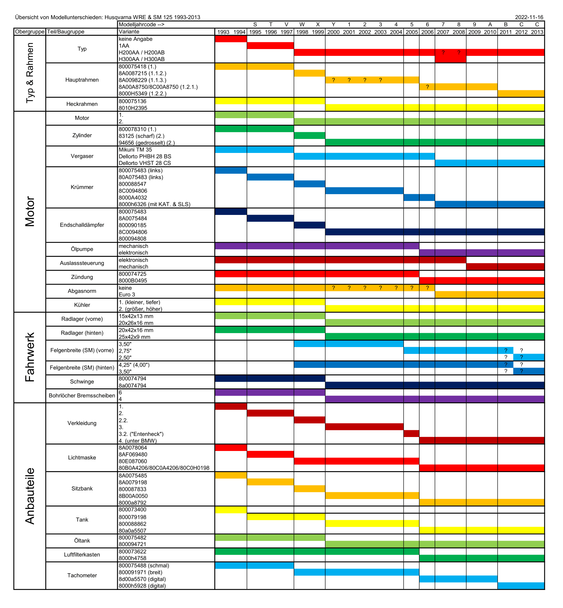1993-1994
Die erste Genaration der WRE. Der Krümmer ist noch links verlegt. (Im Bild ist eine WR) 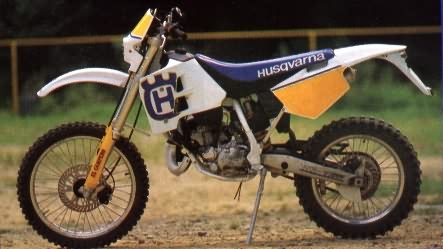 https://www.leguidevert.com/fiches/533/husqvarna125wr1993.jpg
1995-1997
Die letzte Genaration mit dem alten Motor. Es gibt eine neue Lichtmaske, Verkleidung, Tank und Sitzbank. 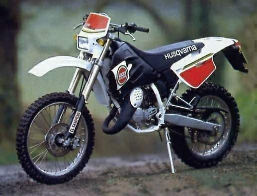 https://www.motorcyclespecs.co.za/Gallery/Husqvana%20WRE125%20Dual%2095%20%201.jpg
1998-1999
Die ersten Baujahre mit den neuen Motor und die einzigen mit dem scharfen Zylinder. Äußerliche ähneln sie stark den Baujahren davor, aber sowohl die Front, als auch die Tankflügel änderten sich. Der Krümmer ist nun rechts verlegt. 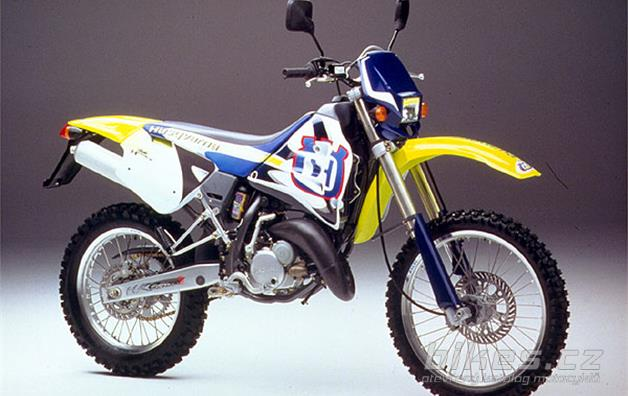 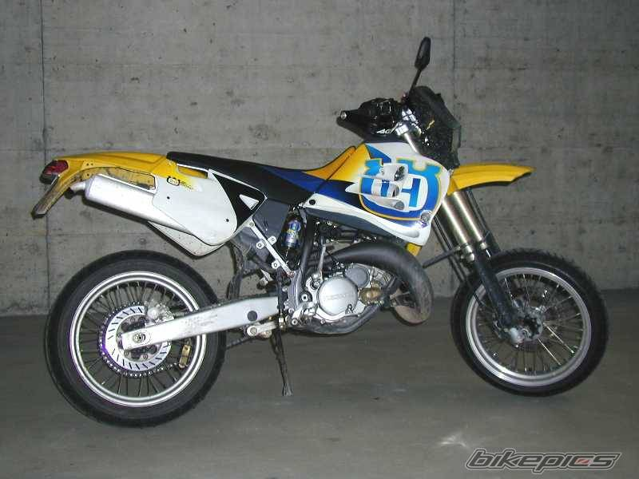
2000-2003
In diesem Jahr wird die Verkleidung stark überarbeitet. Dadurch ändert sich auch der Tank, die Sitzbank, die Radiatoren und sogar der Heckrahmen. Die SM ist nun schwarz. 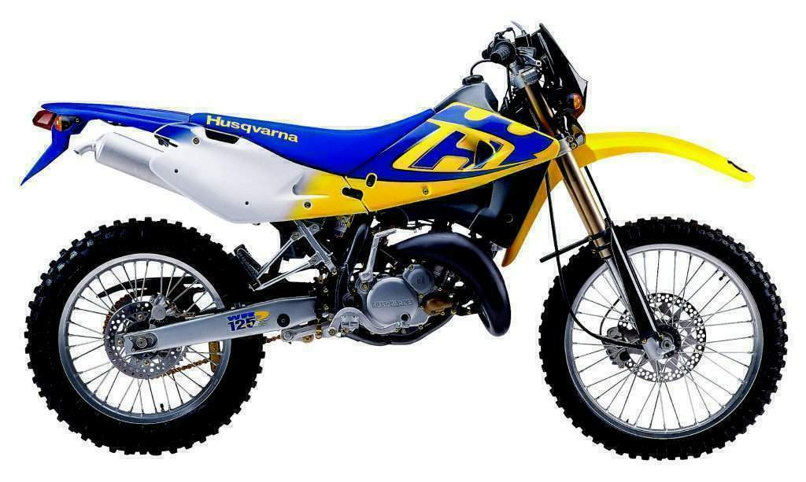 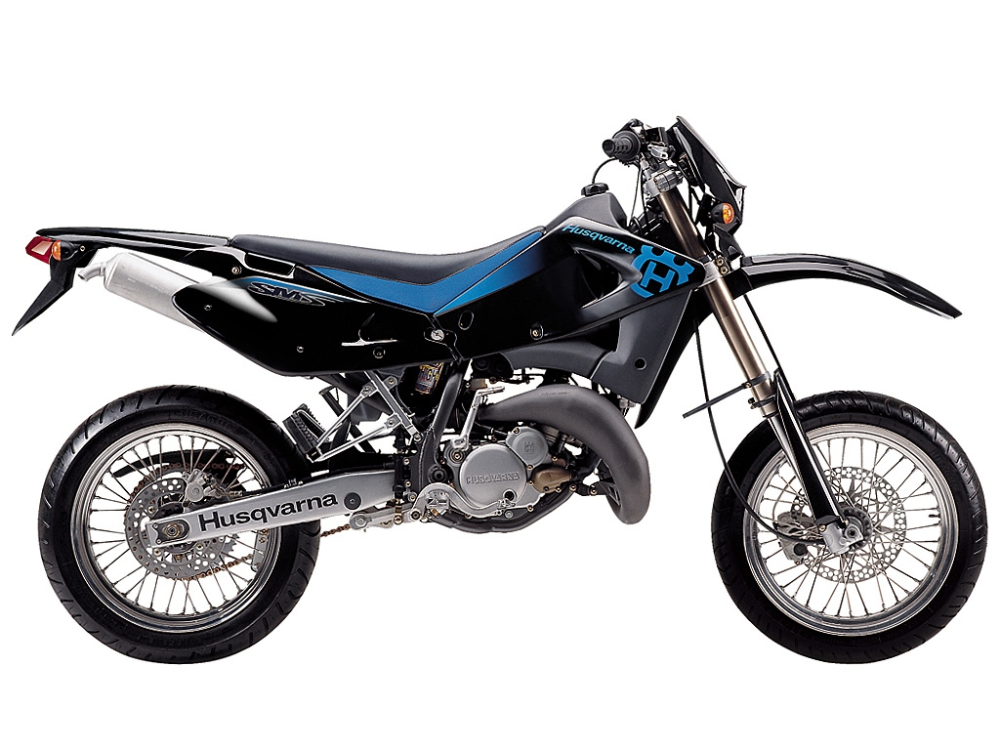
2004
Anlässig des Husqvarna-Jubiläums haben tragen die Dekore des Baujahrs die Nummer 100. 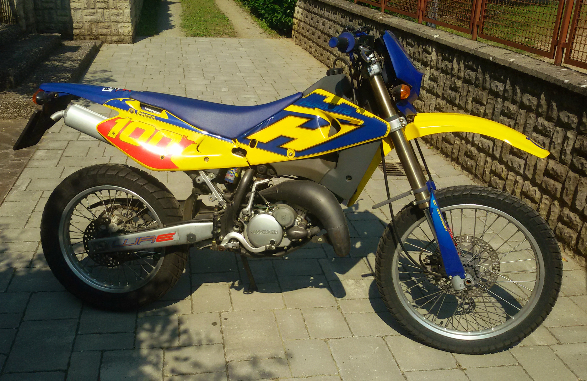 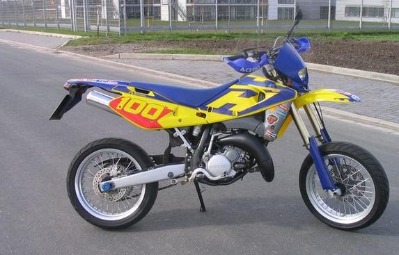 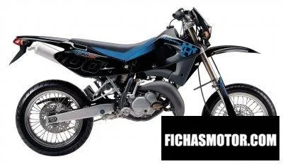 https://encrypted-tbn1.gstatic.com/images?q=tbn:ANd9GcQsATn0dnmS9Zq7dfZvpas01PPQeIjXI7SdYo4tpf8ehhSK7qKA
2005
Hier ändert sich eine Kleinigkeit an der Verkleidung. Die flossen der Seitenteile und vor allem das Heck sind spitzer und gerader als zuvor. Für dieses Jahr hat sich der Name "Entenheck" etabliert. Des Weiteren wird ab jetzt bei der SM anstatt der 3,50" Felge vorne, eine 2,75" Felge verbaut.
 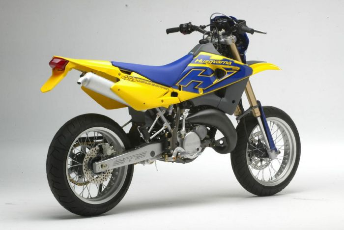
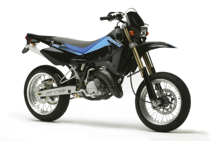
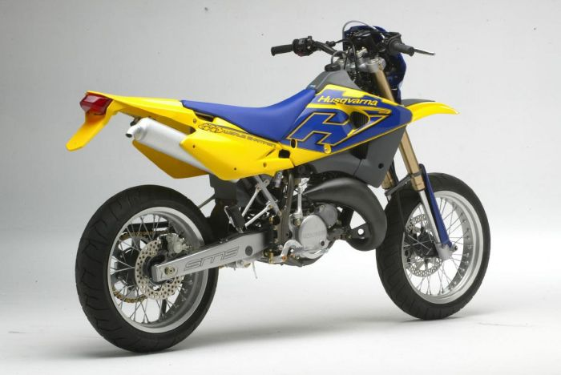
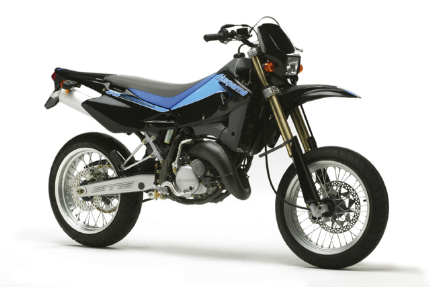
Eine Seltenheit bei diesem Jahr ist die dritte im Katalog verfügbare Variante der SM. Mir sind keine anderen Erwähnungen im Internet bekannt, als den Auftritt im Ersatzteilkatalog. Das besondere an dieser Variante ist, dass sie, wie die späteren Baujahre, bloß mit völlig anderen Plastikteilen, bereits die Farben Rot, Weiß und Schwarz trägt.
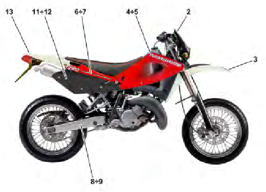
2006
Das Äußere der Husqvarna ändert sich 2006 zum letzten Mal stark. Es gibt eine völlig neue Verkleidung inklusive Tank, Sitzbank und Lichtmaske. Des Weiteren wird nun scheinbar wirklich die neue Farbgebung eingeführt. Die Alte wird aber noch nicht ganz abgeschafft und die Alternative schwarze der SM besteht. 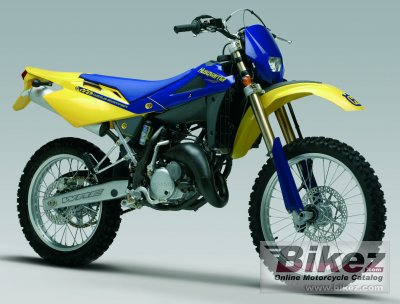 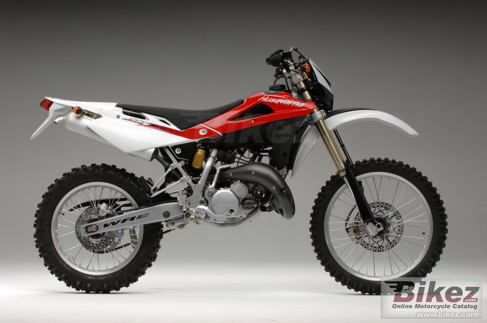 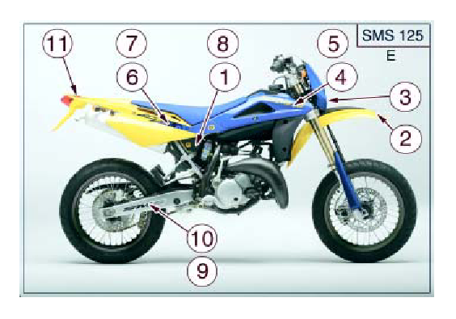 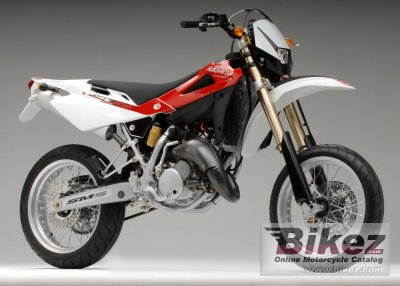 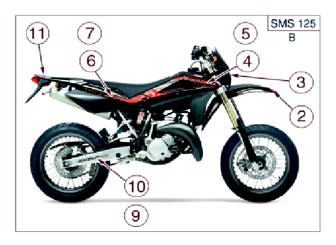
2007-2008
Die Änderungen in diesen Jahren sind technisch. Und zwar wird bei diesem Baujahr zum Krümmer mit Katalysator, zur elektrischen Ölpumpe und der Vergaser zum Dellorto VHST 28 CS gewechselt.
2009
Hier geschieht der Wechsel zur mechanischen Auslasssteuerung. Äußerlich ändern sich mehrere Kleinigkeiten. Die Felgen und die Gabel sind nun schwarz. Der Kennzeichenhalter ist ein anderer. Das Dekor ist auch ein anderes. Die Gabeln sind teilweise aber noch in gold, da hier in einem fließenden Übergang der Hersteller gewechselt wurde. 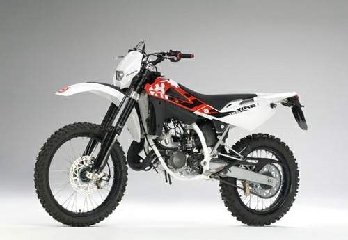
2010-2013
In der letzten Generation gibt es weitere neue Dekore die zwischenzeitlich auch etwas ändern und eine weiße Variante der SM. Die Situation mit den Gabeln hat sich zu Anfang noch nicht gelegt. Des Weiteren wird das Tachometer aktualisiert. Bis 2011 wird die SM noch mit 2,75" und 4,25" Felge ausgeliefert. Später wird wie bei der SMS4 auf 2,50" und 3,50" gewechselt.
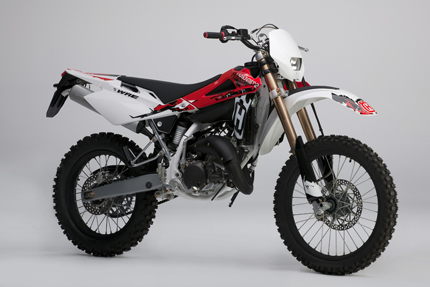
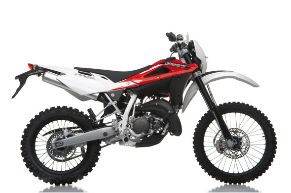a
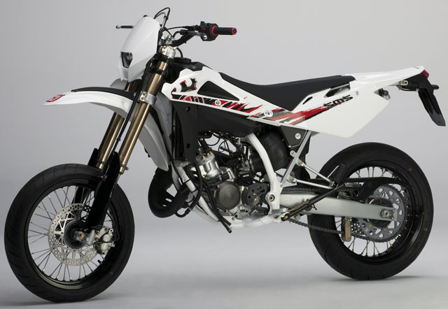
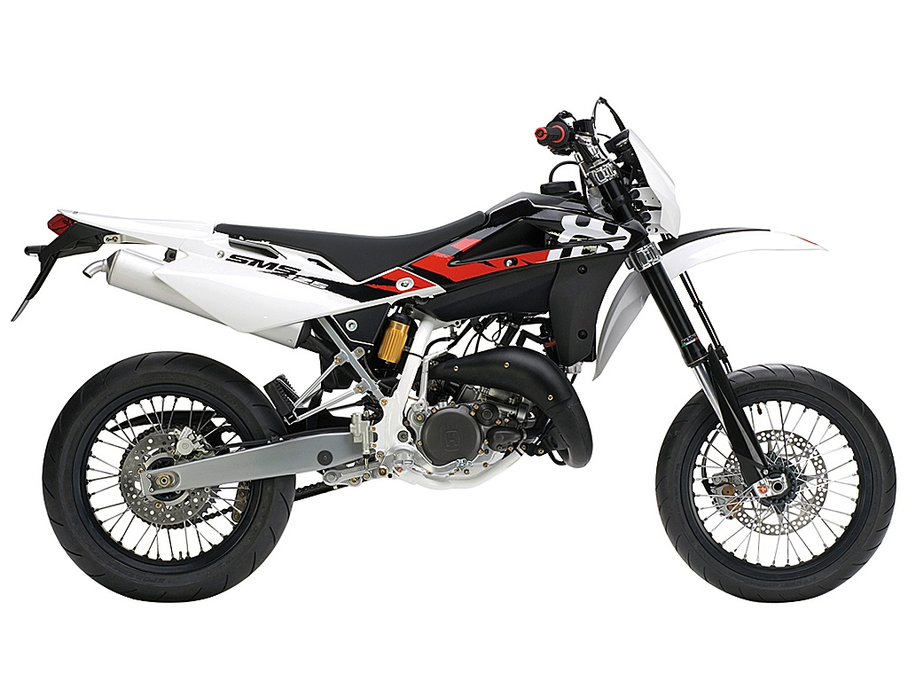
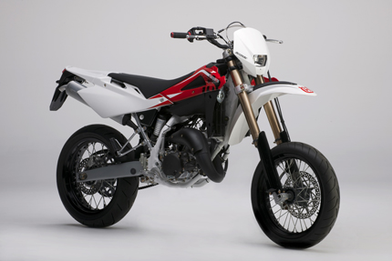
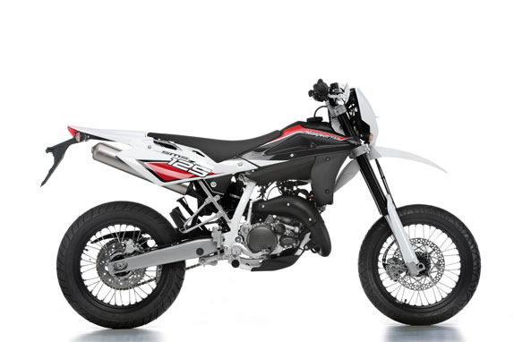
Quelle: http://www.husqvarna-motorrad.de